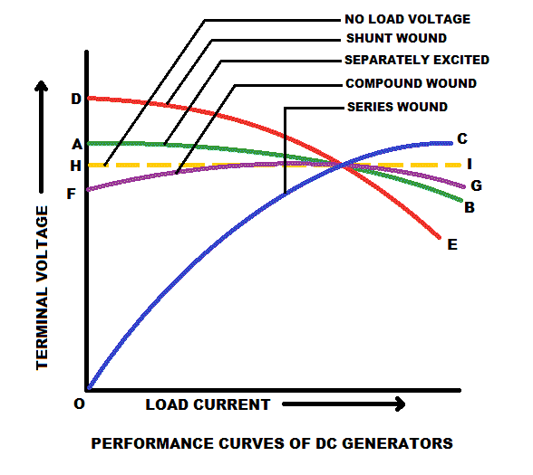

• Series Wound DC Generator
• Shunt Wound Generator
• Compound Wound DC Generator
Performance curves of a DC generator is that curves which shows the ability of delivering output voltage of a DC generator with the change in load current from no load to full load. These are also called characteristic curves. From the performance curve we can get a clear idea about the voltage regulation of various kind of DC generators. The lower the voltage regulation will be, the performance of the generator will be better.
Performance Curve of Separately Excited DC Generator
Though this type of DC generators are rarely used due to its cost for the separate excitation but the performance of these DC generators are quite satisfactory. In separately excited DC generators, the terminal voltage or output voltage is nearly same with the no load voltage as the load increases and the load current started to flow. There is slight drop in the terminal voltage due to armature reaction and IR drop but these drop can be eliminated by increasing field excitation and then we can get constant terminal voltage. In the diagram below, the curve AB is showing this characteristic.
Performance Curve of Series Wound DC Generator
In series DC generators, the terminal voltage at no load will be zero because there is no electric current flowing through the field winding. When load increases then output voltage also increases. Because of its series field with the armature, its terminal voltage varies widely with a little increase in load current. Though in series DC generators the output voltage is lower than the generated voltage due to armature reaction and some ohmic drop in the armature winding. In the diagram below, the curve OC is showing this characteristic.
Performance Curve of Shunt Wound DC Generator
In shunt wound DC generators, there is always some no load voltage due to the existence of shunt field winding. As the load increases, the terminal voltage of this type of DC generators decreases very quickly. It has very large demagnetizing armature reaction and armature resistance drop. Because of this drastic reduction in the terminal voltage, the load current also decreased after a certain point. The performance of this type of generators are very poor. In the diagram below, the curve DE is showing this characteristic.
Performance Curve of Compound Wound DC Generator
At no load, the performance curve of this type of DC generator is same as that of shunt field generators because at no load, there is no electric current in the series field winding. When the load increases, then the terminal voltage drops due to the shunt DC generator, but the voltage rise in the series DC generator compensates the voltage drop. For these reason the terminal voltage remains constant. The terminal voltage can also make higher or lower by controlling the amp-turns of the series field winding. In the diagram below, the curve FG is showing this characteristic.

 by
by